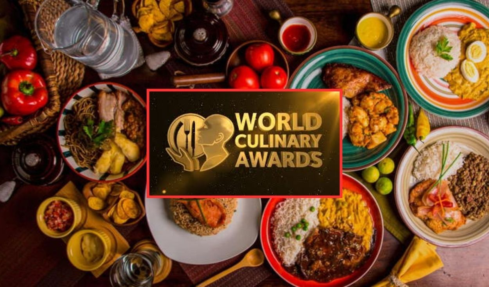
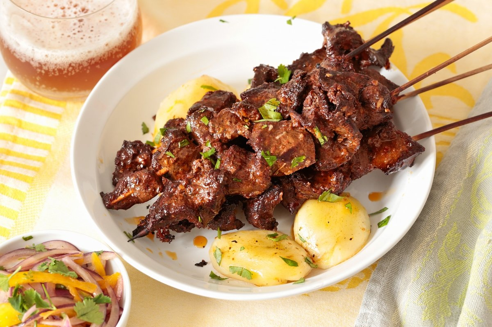
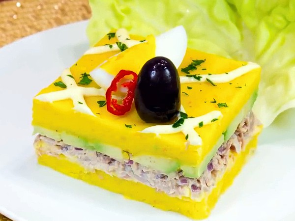
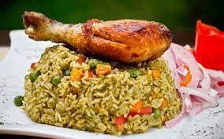
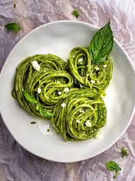
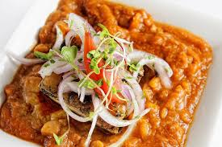

Perú — Recetas imprescindibles
Dato peruano
Perú es un país lleno de historia, cultura y sabores que conquistan el mundo. Cuenta con más de 3.000 variedades de papa, siendo considerado la cuna de este alimento. Su diversidad geográfica —costa, sierra y selva— ofrece una riqueza culinaria incomparable. Platos como el ceviche, el ají de gallina o el lomo saltado son verdaderos símbolos nacionales. La fusión de tradiciones indígenas, españolas y asiáticas hace única su gastronomía. Por eso, Lima ha sido reconocida como la capital gastronómica de América Latina. . ¡Inspírate y prueba la huancaína! 🥔

Lomo saltado
Ver más
Ají de gallina
Ver más
Anticuchos
Ver más
Causa limeña
Ver más
Papa a la huancaína
Ver más
Arroz con pollo
Ver más
Pollo a la brasa
Ver más
Seco norteño
Ver más
Suspiro a la limeña
Ver más
Tallarines Verdes
Ver más